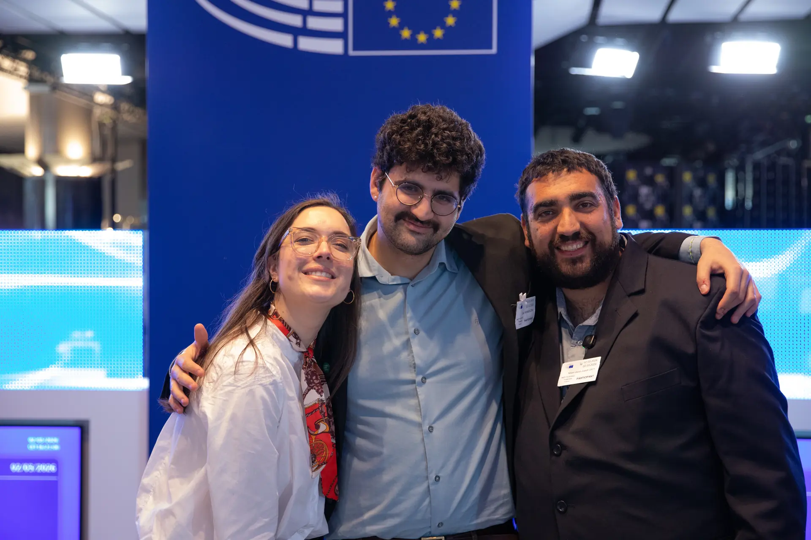
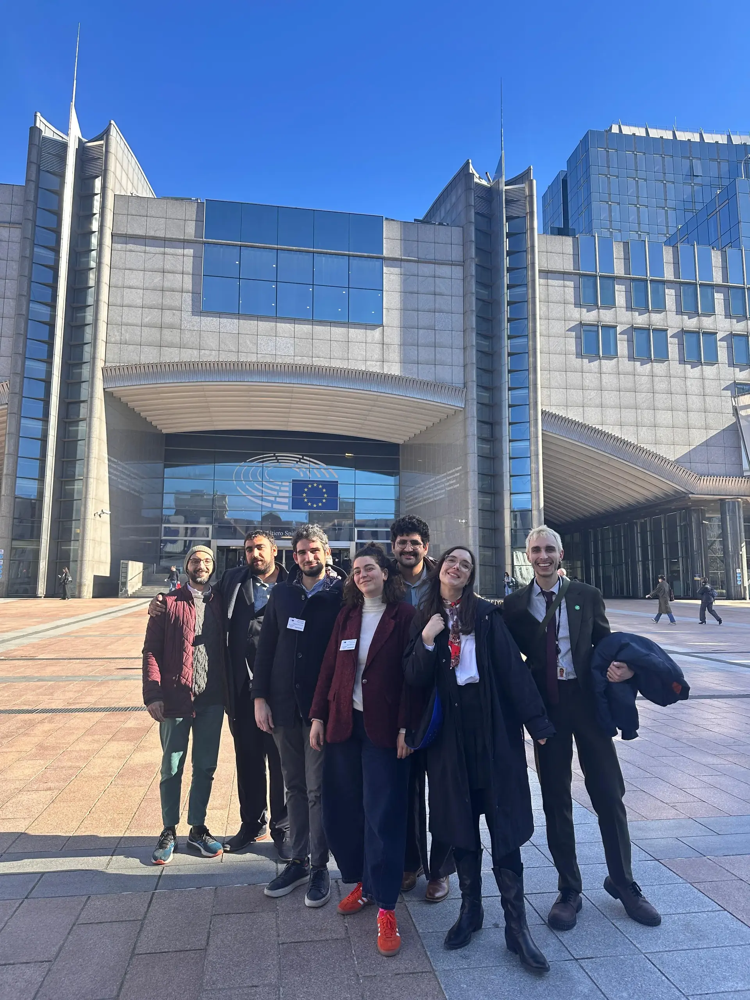

אנחנו בונים אלטרנטיבה פדרלית, פרקטית ואופטימית למציאות של ימינו.
זה הזמן לשנות את הכללים ולבנות בית לכולם.


מפגשים בינלאומיים לקידום החזון הפדרלי עם קובעי מדיניות באיחוד האירופי ושיח על שיתוף פעולה אזורי.
סדנאות שטח וסמינרים המפגישים צעירים וצעירות מכל רחבי הארץ לבניית האלטרנטיבה המשותפת.
צוותי משימה מקצועיים הפועלים לגיבוש ניירות עמדה מדיניים, פיתוח אסטרטגיות שיווק, ניהול פיננסי, וטיפוח קשרים עם הקהילה ועם השטח.
מפגשים פתוחים ושיחות עומק בברים, באוניברסיטאות ובמרכזים קהילתיים ברחבי הארץ והאזור.
הכוח לשנות נמצא בידיים שלנו. השאירו פרטים ונחזור אליכם עם דרכים להשפיע בשטח ובדיגיטל.